Cala Shell Residence
An almond-shaped white roof encloses a private pool court on the Luštica hillside. Its lifted sea edge opens the house toward the bay.
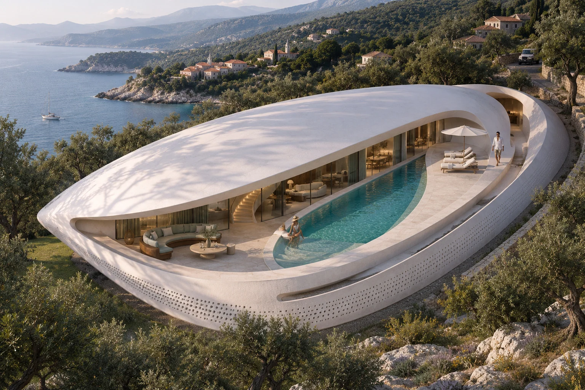
An independent eye
for extraordinary spaces.
I’m Odedipe Michael, an architectural visualiser. My work explores the moment when form, material and light become a place you can imagine yourself in.
Explore selected workAn almond-shaped white roof encloses a private pool court on the Luštica hillside. Its lifted sea edge opens the house toward the bay.
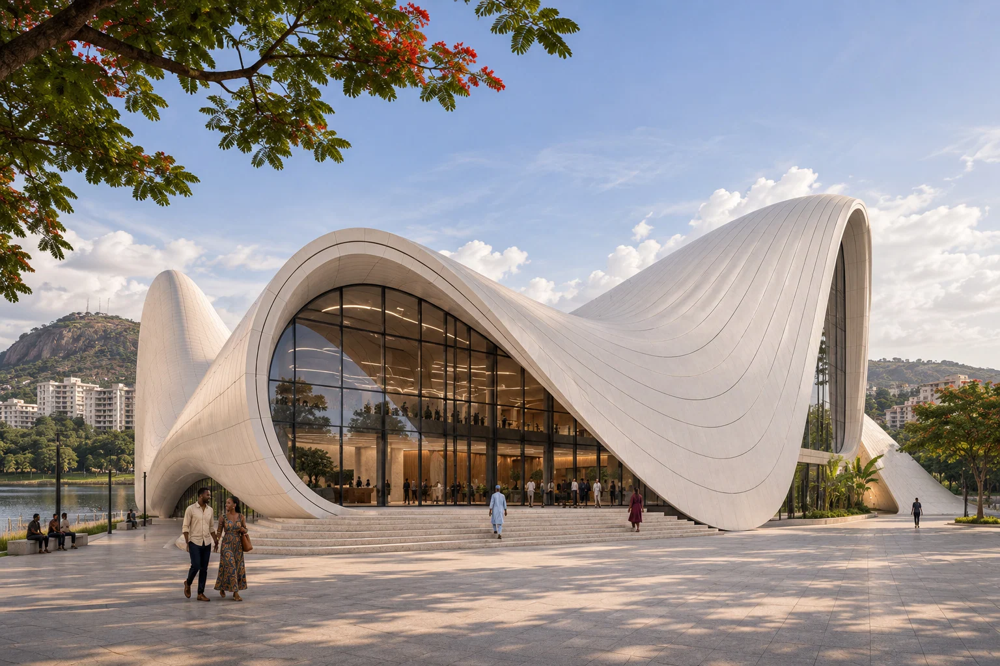
A pale plaza folds into two roof crests, with a glazed foyer opening toward Jabi Lake. People at the entrance establish the scale of the shell.
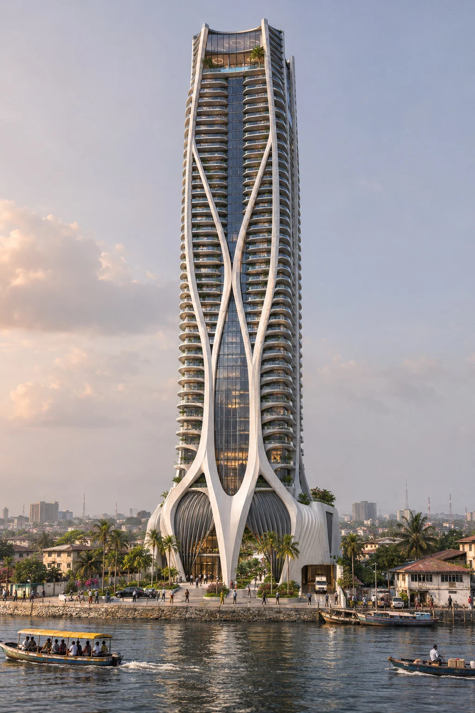
White branching perimeter supports climb a slender residential tower above Five Cowries Creek. Rounded balconies sit behind the structural silhouette.
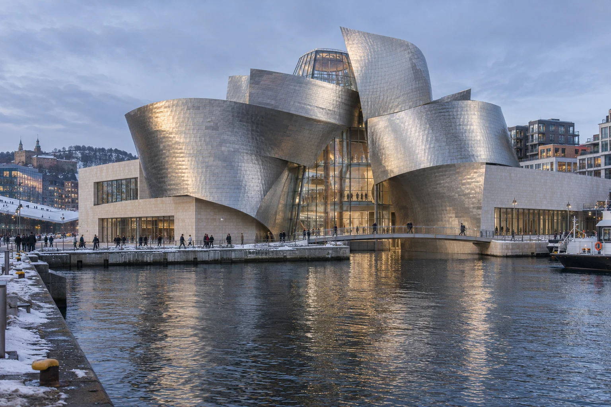
Curling titanium volumes rise from limestone gallery bars beside the Oslo waterfront. Their reflections extend the silhouette across the inlet.
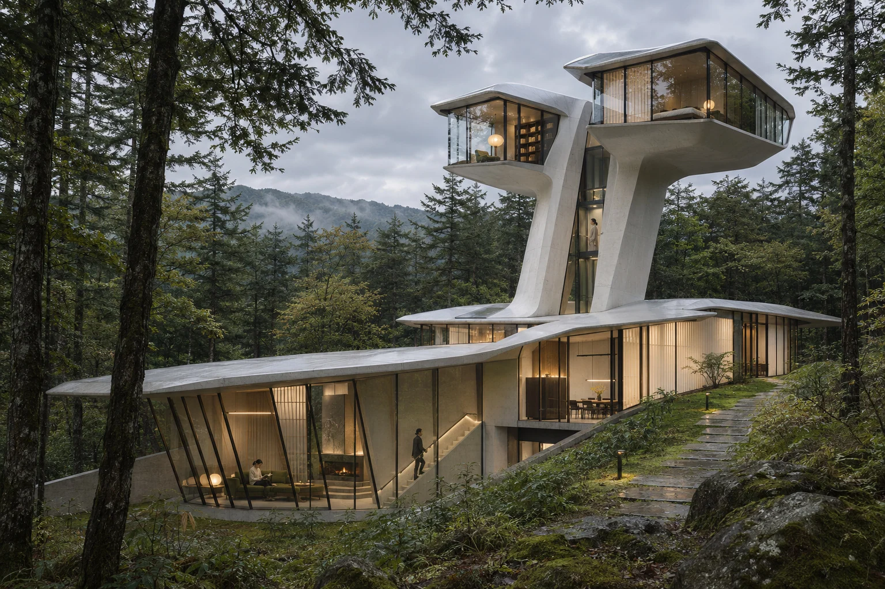
A low glazed family wing rests among the trees while two inclined stems lift separate glazed capsules above the forest. The exposed lift slit marks the ascent.
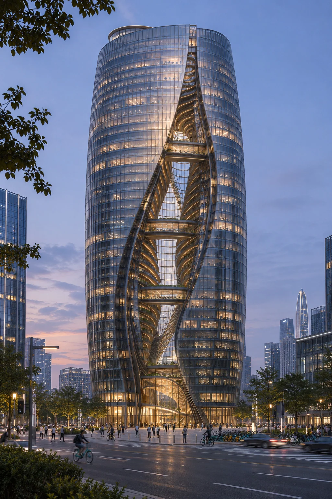
Two glazed halves turn around a diagonal fissure that remains visible from plaza to crown. Warm internal light makes the atrium legible against the evening skyline.
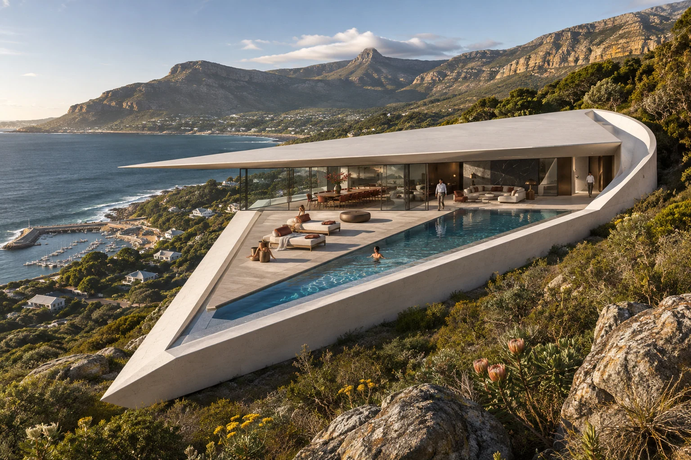
A triangular terrace and thin roof project toward Hout Bay. The narrow pool follows the prow while the uphill edge holds the house against the slope.
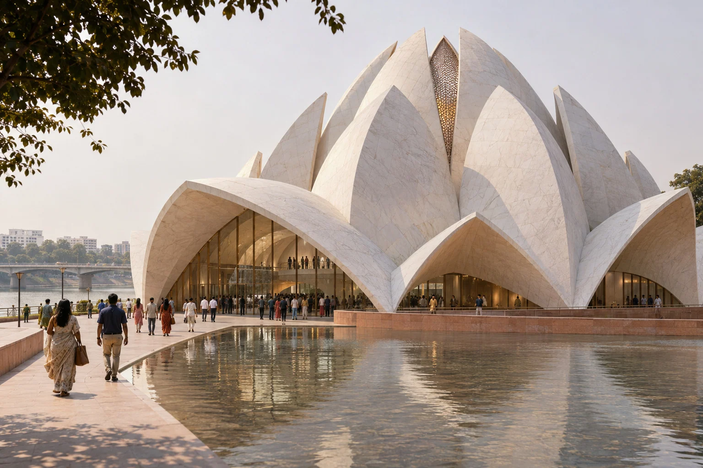
Overlapping pale petals gather above a reflecting court beside the Sabarmati. The entrance opens beneath the low outward-reaching shells.
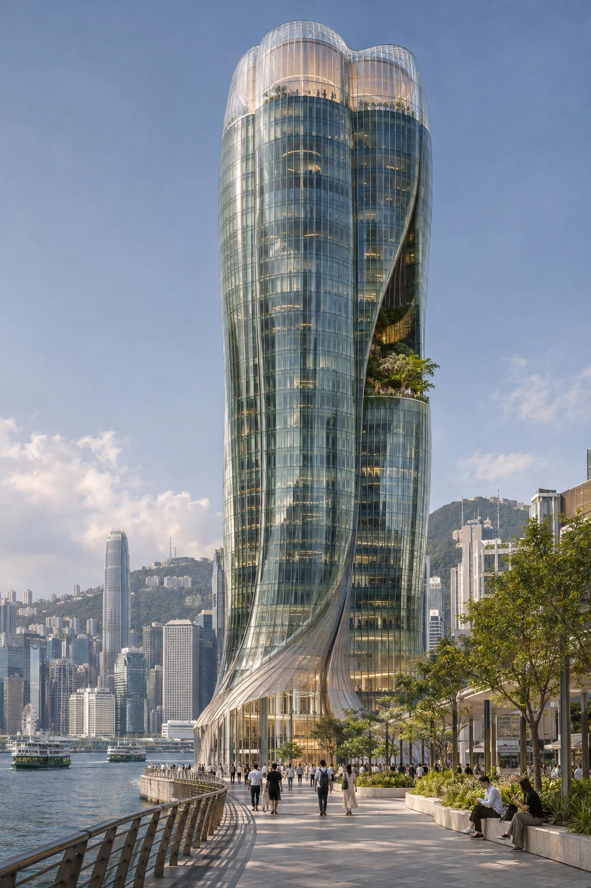
Four rounded glass lobes rise from a twisting waterfront podium. A recessed planted notch interrupts the tower before the transparent crown.

A champagne-coloured inhabited ring frames the Gulf through an open oval. Water and dune planting extend the resort setting around its base.
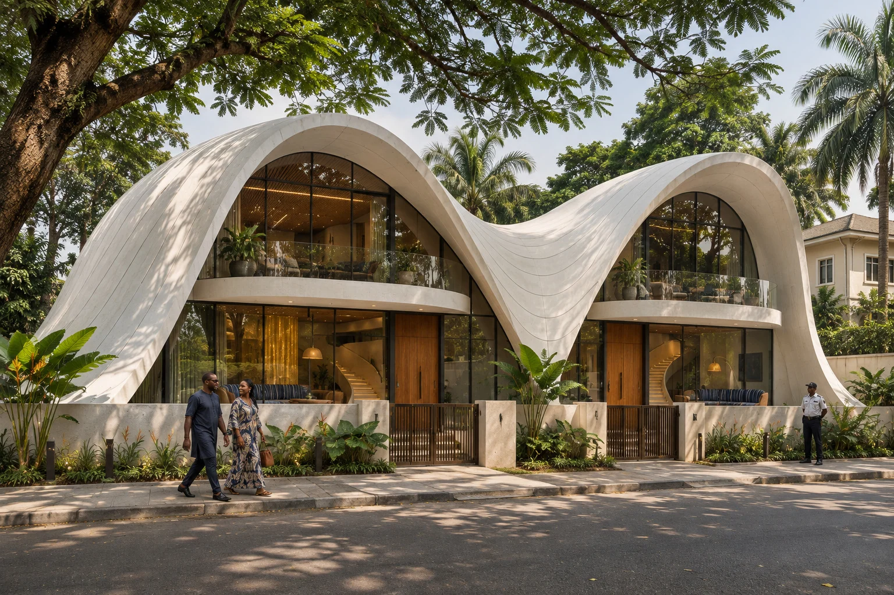
A white roof ribbon rises above two glazed fronts and dips at the shared party wall. Separate gates establish the independence of the two homes.
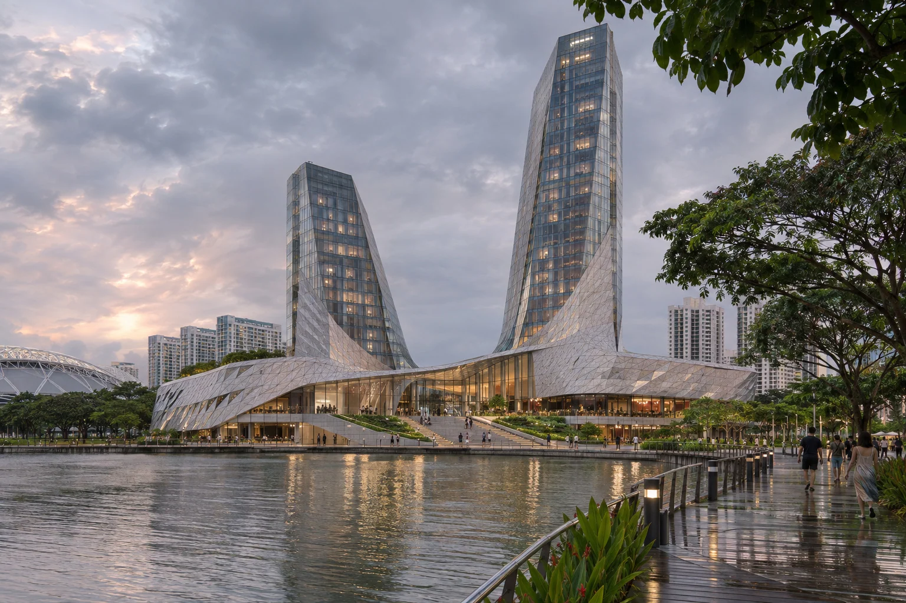
Two unequal towers rise from a fluid shared podium on Kallang Basin. The waterfront reflection draws the taller and shorter wings into one silhouette.

Two terrace planes point in opposite directions on a planted Atlantic slope. A stone blade separates the garden flat from the upper home’s entry.
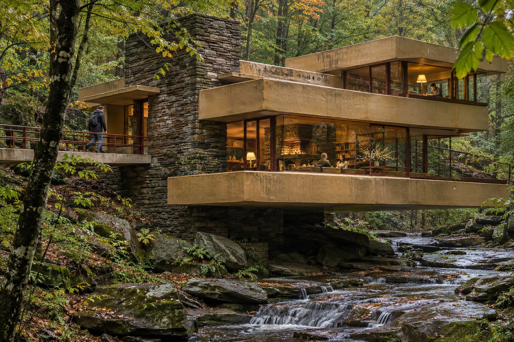
Concrete terrace trays project from a fieldstone spine above a rocky woodland stream. The layered horizontal edges sit within the surrounding canopy.
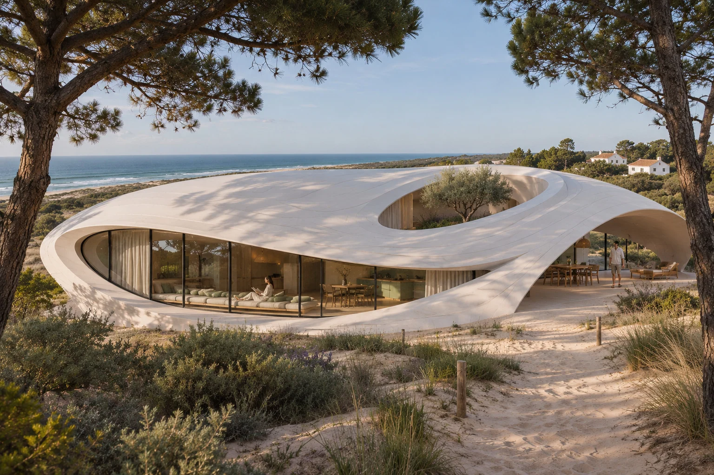
A low white shell rises from dune planting around a sheltered central opening. The sea-facing glazed crescent follows its lifted edge.
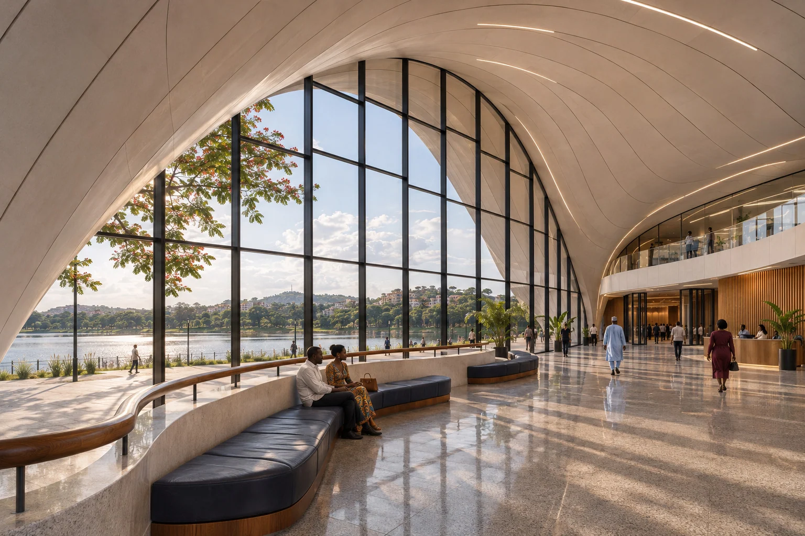
The quiet
inside the extraordinary.
The tall lake-facing window brings water and landscape into the foyer. Curved indigo seating and an iroko handrail give the monumental room a human scale.
View projectFind the gesture that defines the project. Understand the approach, the threshold, and the spaces where its character comes into focus.
A stone edge catching sunlight. Timber grain at hand height. Fabric softening a monumental room. The atmosphere lives in these relationships.
Choose the camera, light and moment together. Build a sequence that moves from the scale of a landscape to the intimacy of an interior.